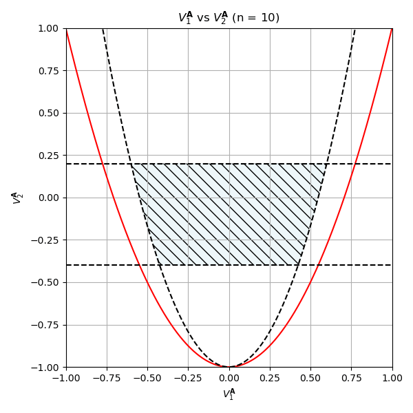
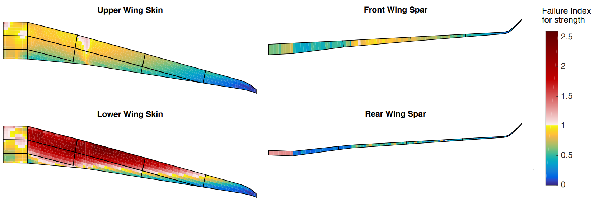
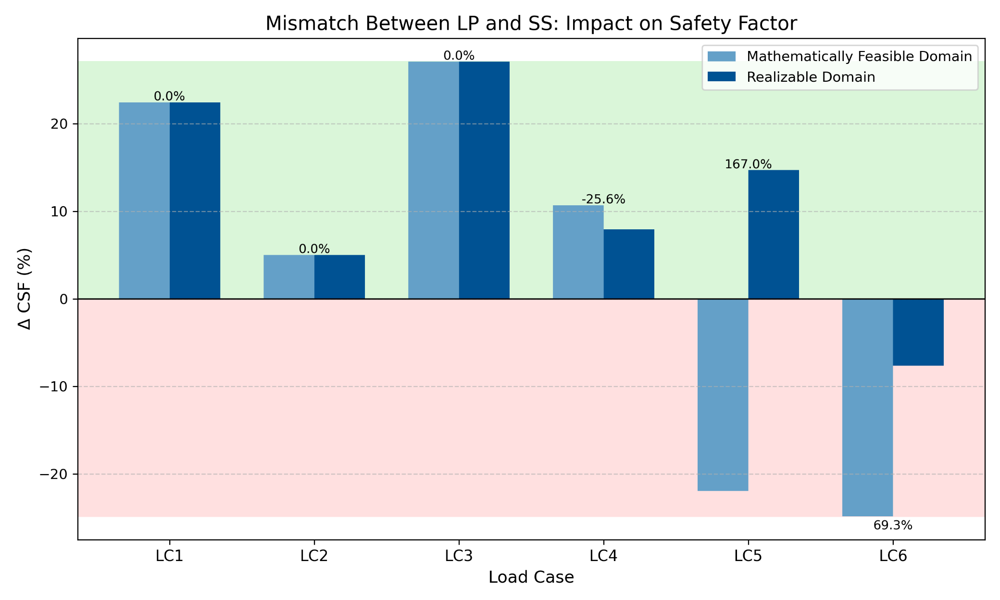

When the first level optimisation selects LPs outside the realizable domain, the second level retrieval cannot reproduce the target stiffness. This creates a safety factor prediction error — the optimised design on paper does not match the manufacturable layup in practice. This thesis characterises the realizable domain and constrains the first level to it, directly reducing this mismatch.

Six benchmark load cases from literature used to validate the framework across tension-dominant, compression, shear, and coupled loading scenarios.
| Load Case | Nx (N/mm) | Nxy (N/mm) | Type |
|---|---|---|---|
| LC1 | 0 | −800 | Pure shear |
| LC2 | 0 | +400 | Pure shear |
| LC3 | −100 | +500 | Coupled shear + compression |
| LC4 | −300 | −300 | Coupled shear + compression |
| LC5 | −500 | +200 | Compression dominant |
| LC6 | +500,000 | +100 | Tension dominant ← 69.3% reduction |
| Load Case | Outcome |
|---|---|
| LC1, LC2, LC3, LC4 | Constraints inactive — no mismatch created |
| LC5 (compression dominant) | 100% mismatch eliminated |
| LC6 (tension dominant) | −69.3% mismatch reduction |
For LC1–LC4, the first level optimum already lies within the realizable domain — so the derived constraints are inactive and no mismatch is generated in the first place.
For LC5 (compression dominant), the realizable domain constraint brings the first level optimum fully within reach of the second level — 100% mismatch elimination.
For LC6 (tension dominant, Nx = 500,000 N/mm), the LP space is largest, placing the unconstrained optimum furthest from the realizable domain. The derived constraints reduce this mismatch by 69.3%.
